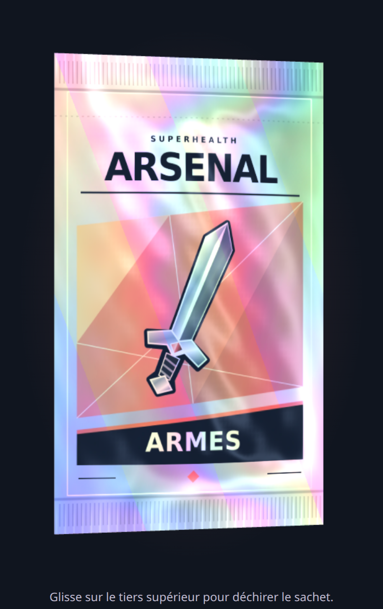
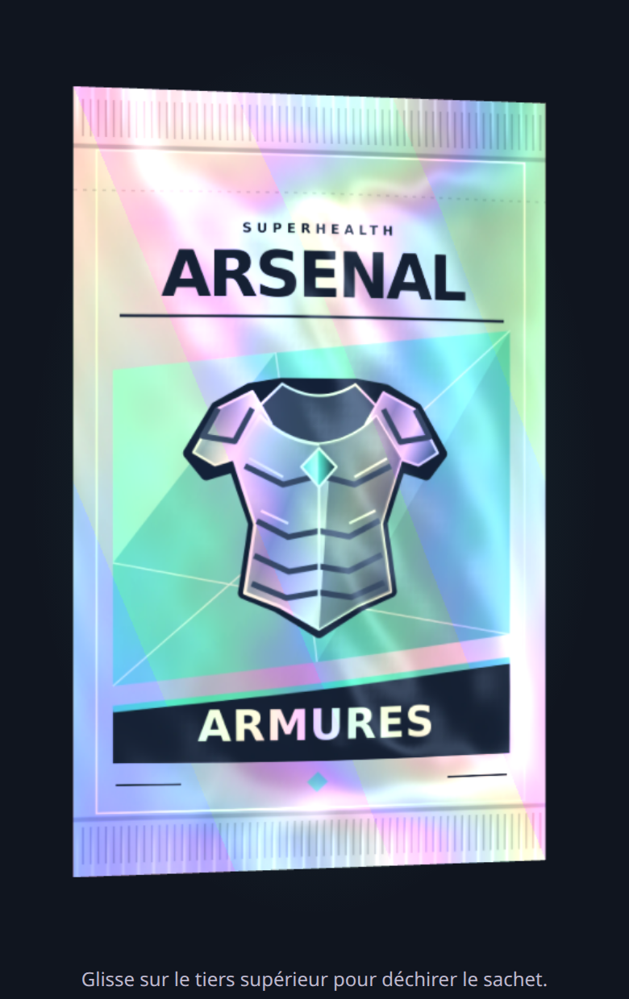
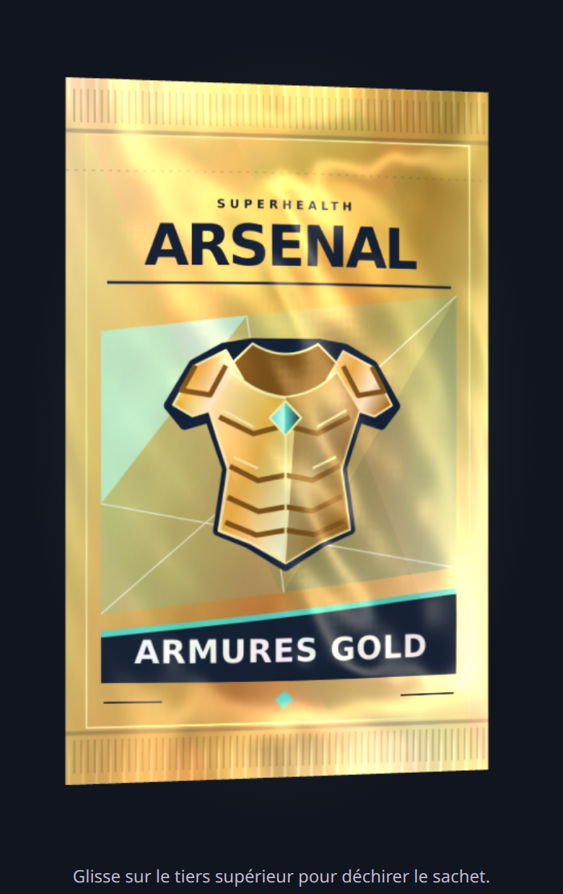

ARMESARGENT / CORAIL

ARMURESARGENT / MENTHE
ARMES GOLDOR / CORAIL

ARMURES GOLDOR / MENTHE
Cette proposition est réalisée dans les sources de l’application. Les images ci-dessus sont des captures du moteur, pas des maquettes ImageGen. Les SVG sont reproductibles ; le matériau réagit à la rotation. Le rendu de secours sans WebGL conserve les quatre illustrations.
Version 3.9.9 · Tranches continues · Français / English
Géométrie corrigée : les deux faces rejoignent une soudure latérale fine et partagent exactement leurs points de bord. Le geste de déchirure est conservé. Les illustrations passent en anglais avec la langue de l’app : Weapons, Armor, Weapons Gold et Armor Gold, recto et verso.
La couleur suit la matière
Deux orientations du même paquet : diffraction sur la surface argentée, typographie sombre préservée et reflets plus chauds sur les versions Gold. Les mouvements réduits conservent une matière statique tant que le paquet ne tourne pas.
Dashboard : rendre les priorités visibles
Audit du code Android local au commit feb0ea2d, en tenant compte des modifications non commitées présentes. Les anciennes captures de novembre servent de repères visuels ; elles ne sont pas présentées comme une capture du build actuel. La grande carte « Mes séries » de ces captures a été retirée depuis : elle n’est donc pas traitée comme un défaut actuel.
À conserver : le fond sombre calme, les couleurs par famille, les quatre tailles, la grille personnalisable, le cache des données au retour et le chargement séparé des scores de montre.
| Priorité | Constat dans les sources | Amélioration proposée |
|---|
| 1 · Premier écran | 16 cartes dans la sélection initiale. Quêtes, classement et amis apparaissent avant plusieurs données santé. | Une synthèse du jour, puis sommeil/activité et prochaine action. Limiter la sélection initiale à 6–8 cartes ; conserver les autres dans la personnalisation. Le jeu reste accessible via un bandeau compact. |
| 2 · Chargement | Le contenu après l’en-tête est conditionné par val an = a ?: return@LazyColumn, lié aux analyses nutritionnelles. | Afficher un squelette explicite pendant l’initialisation, puis découpler les cartes santé/social de cette dépendance. En cas d’échec, une action Réessayer plutôt qu’un écran presque vide. |
| 3 · Actions du jour | Les rappels de bilan, pesée, humeur et récapitulatif peuvent occuper plusieurs lignes avant la grille. Une carte optionnelle « À faire » existe déjà. | Réutiliser ce mécanisme pour présenter une action prioritaire et un compteur des autres rappels. Ne pas recréer une seconde liste de tâches concurrente. |
| 4 · Lisibilité | Les petits formats concentrent titre, valeur et légende ; plusieurs textes sont tronqués sur une ligne. Le grand format « Amis » apporte surtout un nombre et des initiales. | Réserver le petit format aux valeurs simples, élargir les cartes à libellé long, afficher les amis en bandeau. Valeur et unité lisibles avant les détails. Valider les grandes polices sur appareil. |
| 5 · Personnalisation | Le bouton d’en-tête ouvre un mode d’édition sur place ; celui du bas ouvre un autre écran avec aperçu et réorganisation. | Unifier les deux points d’entrée. Ajouter trois dispositions de départ : Essentiel, Entraînement, Suivi complet, avec aperçu avant application et annulation. |
| 6 · Données compréhensibles | Les lectures peuvent retomber sur des listes vides ou des valeurs nulles, et un instantané précédent est conservé. | Distinguer Chargement, Pas de donnée, Source déconnectée et Dernière mesure connue. Afficher la date de la mesure et la source dans le détail de chaque carte ; éviter de transformer une absence en zéro. |
| 7 · Santé / Arsenal | Les fonctions sociales ont plusieurs cartes et un accès au fil. L’Arsenal possède son propre écran de paquets. | Un bandeau « Arsenal · paquet disponible » avec accès direct, conditionné à une disponibilité réelle. Réserver les reflets et animations à l’Arsenal pour garder le dashboard facile à lire. |
Organisation proposée
Schéma de disposition, sans données de santé inventées. La personnalisation reste disponible ; cette proposition ne modifie pas encore le dashboard de l’app.
AUJOURD’HUIBonjour 👋
Votre journée en un regardObjectif du jour et progrès mesurés.
Action prioritaire SommeilDernière nuit
Tendance
ActivitéPas du jour
Objectif
Prochaine séanceSéance prévue et accès direct.
NutritionRésumé adapté au suivi activé.
Arsenal →Disponibilité réelle des paquets.
Personnaliser
Une hiérarchie stable
Une grande carte pour la priorité, deux tuiles de lecture rapide, puis les modules utiles. Les repères restent à la même place ; les détails s’ouvrent au toucher.
Des couleurs avec un rôle précis
Conserver les teintes de chaque famille. Réserver l’accent principal à l’action utile et l’or aux récompenses. Utiliser la surface et les espaces pour organiser le contenu avant d’ajouter des effets.
Ordre d’exécution
Commencer par les états de chargement et la sélection initiale ; unifier ensuite la personnalisation ; terminer par les détails de contraste, de densité et de typographie sur petit écran et grandes polices.